Q1. Vous es :
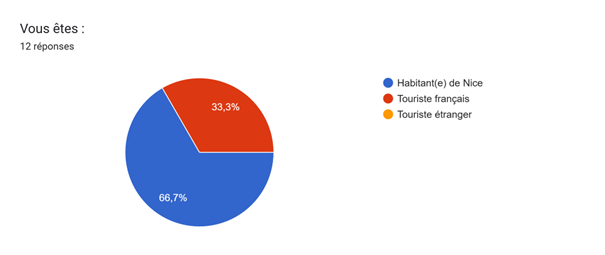
A1. Comment te rends-tu le plus souvent à ton établissement scolaire ?
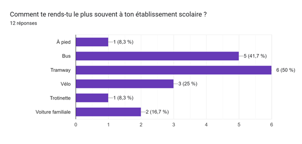
A2. La distance entre ton domicile et ton établissement est d’environ :
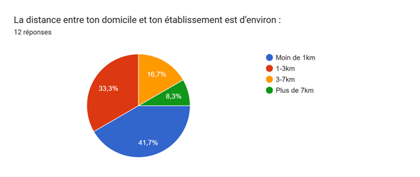
A3. Utilises-tu un moyen de transport non polluant ?
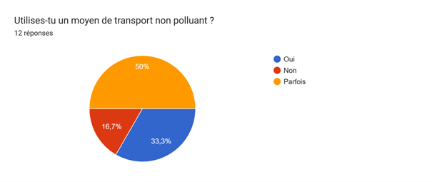
A4. Si tu n’utilises pas de transport non polluant pour aller à l’école, pourquoi ?
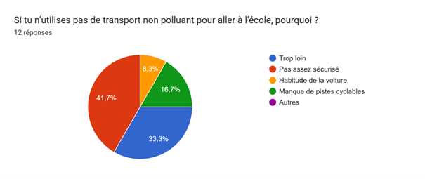
A5. Te sens-tu en sécurité à vélo à Nice ?
A6. Près de ton établissement, les pistes cyclables sont :
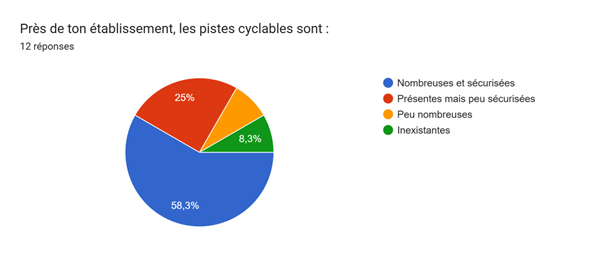
A7. Si les pistes cyclables étaient mieux sécurisées, utiliserais-tu davantage le vélo ?
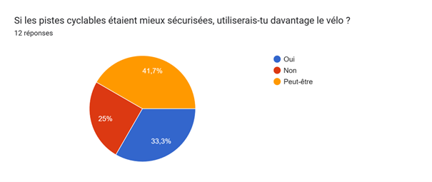
A8. Utilises-tu des trottinettes ou vélos en libre-service à Nice ?
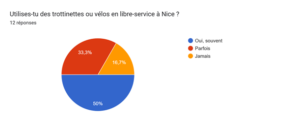
A9. Selon toi, ces trottinettes/vélos sont : (Tu peux cocher plusieurs réponses)
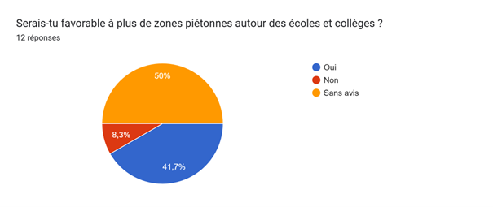
A10. Serais-tu favorable à plus de zones piétonnes autour des écoles et collèges ?
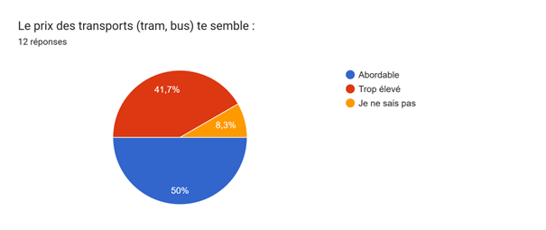
A11. Le prix des transports (tram, bus) te semble :
A12. Quel mode de transport non polluant te semblerait le plus pratique pour toi à Nice ?
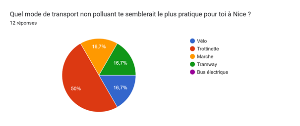
A13. Aimerais-tu que la ville propose des vélos gratuits ou très peu chers pour les élèves ?
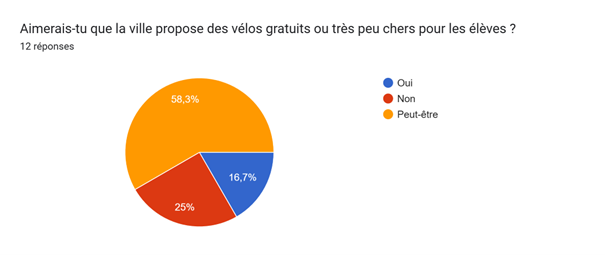
A14. Te semblerait-il utile d’avoir plus d’abris à vélos sécurisés près de ton établissement ?
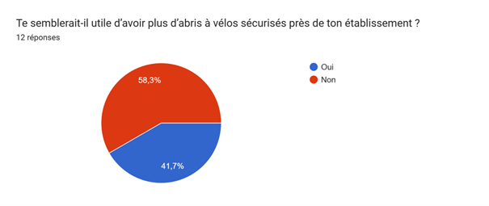
A15. En dehors de l’école, pour tes activités (sport, amis, loisirs), tu te déplaces surtout :
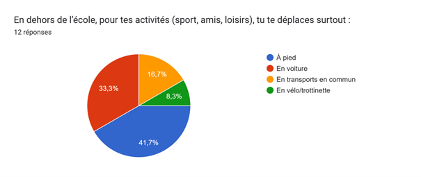
A16. Pour ces déplacements, serais-tu prêt(e) à utiliser plus souvent un moyen non polluant si c’était mieux adapté ? (non enregistré dans le Google Form)
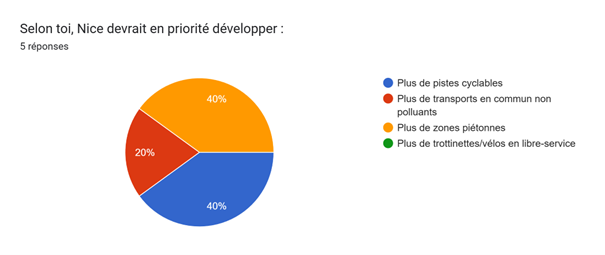